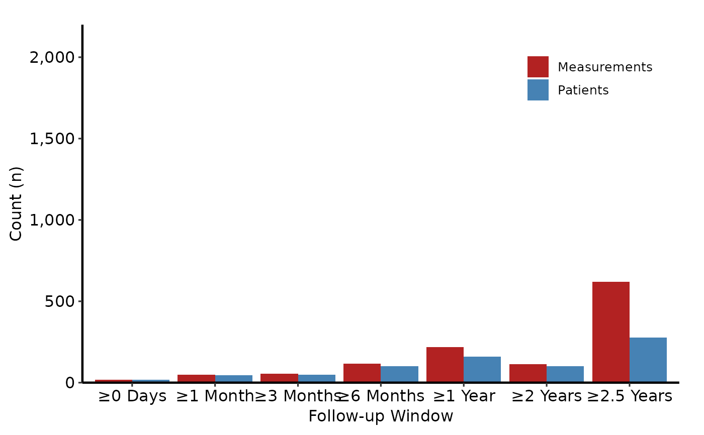

Prepare longitudinal participation counts data for plotting
Source:R/longitudinal-counts-plot.R
hvti_longitudinal.RdValidates a pre-aggregated long-format counts data frame and returns an
hvti_longitudinal object. Call plot.hvti_longitudinal
on the result with type = "plot" for the grouped bar chart or
type = "table" for the numeric text-table panel. Compose both
panels with patchwork.
Arguments
- data
Long-format data frame; one row per series per time point. See
sample_longitudinal_counts_data.- x_col
Name of the discrete time-label column. Default
"time_label".- count_col
Name of the numeric count column. Default
"count".- group_col
Name of the series grouping column. Default
"series".
Value
An object of class c("hvti_longitudinal", "hvti_data"):
$dataThe validated input data frame.
$metaNamed list:
x_col,count_col,group_col,n_timepoints,n_groups,n_obs.$tablesEmpty list.
Examples
dta <- sample_longitudinal_counts_data(n_patients = 300, seed = 42L)
lc <- hvti_longitudinal(dta)
lc # prints group/time-point counts
#> <hvti_longitudinal>
#> Time points : 7
#> Groups : 2 (14 rows)
#> x / count / group : time_label / count / series
library(ggplot2)
plot(lc, type = "plot") +
scale_fill_manual(
values = c(Patients = "steelblue", Measurements = "firebrick"),
name = NULL
) +
scale_y_continuous(labels = scales::comma,
breaks = seq(0, 2000, 500),
expand = c(0, 0)) +
coord_cartesian(ylim = c(0, 2200)) +
labs(x = "Follow-up Window", y = "Count (n)") +
hvti_theme("manuscript") +
theme(legend.position = c(0.85, 0.85))
